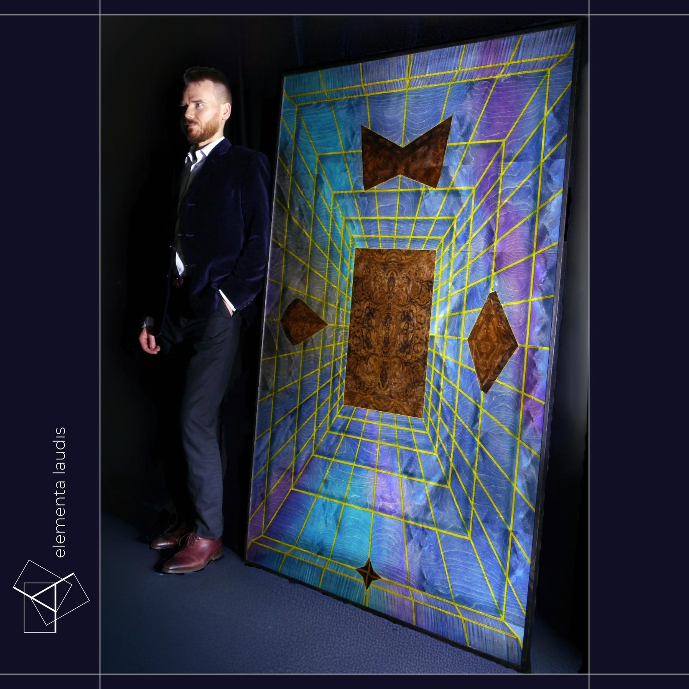
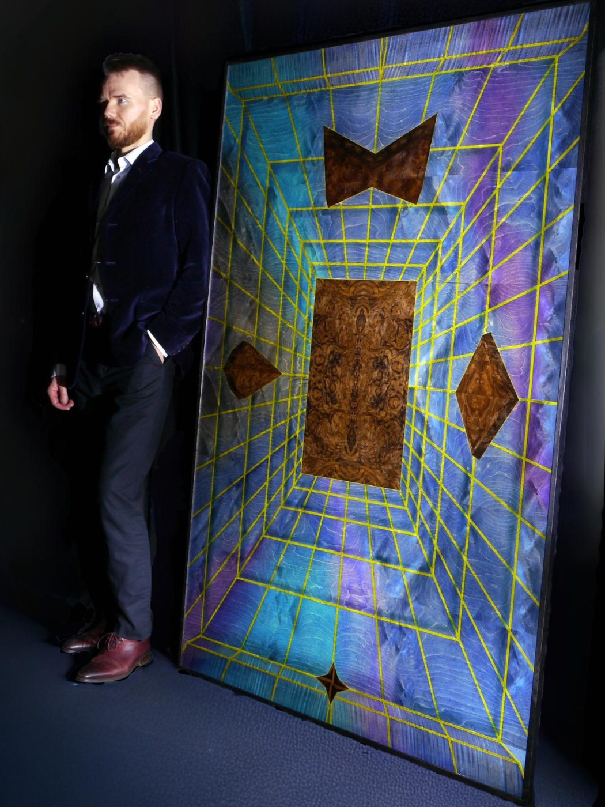

Zapraszam na Great Northern Contemporary Craft Fair, gdzie pokażę nowy cykl Now feat. Addiction. Victoria Baths, Manchester, 15 do 18 października, stoisko B09 w Pool B. Szczegóły
Wystawa w Sheffield przez dwa weekendy: 27 do 29 listopada, z wernisażem w piątek 27 listopada, oraz 4 do 6 grudnia, z pokazem intarsji w sobotę 5 grudnia. Szczegóły
Intarsja wielkości ściany
Zajmuję się intarsją współczesną w swoim studio artystycznym w Sheffield. Wycinam i składam każdy element ręcznie z naturalnych fornirów, a potem je barwię. To rzemiosło, które w Wielkiej Brytanii i na świecie prawie już zanikło, a w takiej skali pracują w nim tylko jednostki.

Wybrane prace
Każde dzieło jest jedyne w swoim rodzaju
Każdy fornir dobieram, wycinam i układam ręcznie. Żadnego z tych dzieł nie da się powtórzyć. Dwa kawałki drewna nigdy nie mają tego samego wzoru i w tym właśnie tkwi całe piękno.

Prace na sprzedaż
Jak kupić pracę
Ceny moich prac są wszędzie takie same, jeśli odwiedzisz mnie w pracowni, na targach, na tej stronie lub w galerii sztuki. Do każdej dołączam podpisany certyfikat autentyczności. Dostawę na terenie Wielkiej Brytanii załatwiam osobiście, a wysyłkę za granicę wyceniam na życzenie.
Jeśli chciałbyś/chciałabyś najpierw mnie poznać i porozmawiać albo po prostu zobaczyć pracę na żywo w pracowni, zanim się zdecydujesz, to napisz do mnie. Odwiedziny są możliwe po wcześniejszym umówieniu, a płatność chętnie rozłożę na dwie albo trzy części bez żadnej dopłaty.
Pełne zasady, w tym prawo do zmiany zdania w ciągu czternastu dni, znajdziesz na stronie zakup, dostawa i zwroty.
O mnie
Jan Katewicz
Urodziłem się w Warszawie w 1987 roku, a mieszkam i pracuję w Sheffield. Od czternastu lat jestem doradcą finansowym i nadal nim jestem, co zaskakuje ludzi, którzy wcześniej stanęli przed którąś z moich płyt. Zmieniło się to, że miałem wypadek na rowerze. Wylądowałem w szpitalu i dostałem pół roku na to, żeby się zastanowić, co właściwie chcę robić. W tym czasie trafiłem na fornir, czyli drewno pocięte tak cienko, że widać w nim wszystko, przez co przeszło drzewo, i zacząłem ciąć.
To, co robię teraz, łączy bardzo stare rzemiosło z myśleniem, które kojarzy się raczej ze współczesnym malarstwem abstrakcyjnym. Cykl Innerysm jest o wewnętrznej sile, o poznawaniu siebie i o tych warstwach motywacji, na które zwykle nie patrzymy wprost. Buduję to wszystko z fornirów, w układach, które niektórym kojarzą się z mandalami, fraktalami i mukarnasami, czyli sklepieniami znanymi z architektury islamskiej.
Większość intarsji jest wielkości szkatułki. Moje prace są wielkości ściany i to jest poniekąd sedno sprawy. W Wielkiej Brytanii intarsją zajmuje się garstka osób, a w takiej skali prawie nikt. Moje prace trafiły już do prywatnych kolekcji w pięciu krajach.
Jestem członkiem Joined Up Heritage Sheffield (JUHS), organizacji charytatywnej, która łączy ludzi i instytucje dbające o dziedzictwo Sheffield.

Wystawy i targi
Gdzie można zobaczyć prace
-
4 do 6 grudnia 2026
Wystawa w pracowni, drugi weekendSheffield, miejsce zostanie ogłoszone, z pokazem intarsji w sobotę 5 grudnia
-
28 do 29 listopada 2026
GNCCF Online, edycja świątecznaOnline
-
27 do 29 listopada 2026
Wystawa w pracowni, pierwszy weekendSheffield, miejsce zostanie ogłoszone, otwarcie z wernisażem w piątek 27 listopada
-
16 do 18 października 2026
Great Northern Contemporary Craft FairVictoria Baths, Manchester, stoisko B09 w Pool B, wernisaż 15 października. Przez cały weekend będę przy stoisku ciął fornir na żywo.
-
maj 2025
Open Up SheffieldOtworzyłem pracownię na weekend, żeby pokazać cykl Innerysm i to, jak powstaje intarsja
-
listopad 2024
Wystawa zbiorowaThe Holy Art Gallery, Londyn, dwie prace w wystawie kuratorowanej
-
sierpień 2024
Innerysm, wystawa indywidualnaElementa Laudis, Sheffield, połączona z otwarciem studia
-
na bieżąco
Wirtualna otwarta pracowniaNagrywam powstawanie każdego dzieła i publikuję na YouTube
Kontakt
Napisz do mnie
Niezależnie od tego, czy chodzi o zakup pracy, o zamówienie autorskie, o współpracę z galerią, o prasę czy o wizytę w pracowni, napisz do mnie bezpośrednio. Każdą wiadomość czytam osobiście.
List z pracowni
Nowe prace w pierwszej kolejności
Kilka razy w roku wysyłam nowe prace, zanim pokażę je publicznie, a przy okazji terminy wystaw i od czasu do czasu notatkę znad stołu warsztatowego. Częściej się nie odzywam.
Elementa Laudis
Unit 16, Gordon Works Complex, Valley Rd, Sheffield, S8 9FT, Wielka Brytania
Wizyty po wcześniejszym umówieniu. elementa.laudis@gmail.com